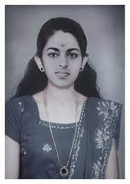

1969 മെയ് 21ന് വയനാട് ജില്ലയിലെ മടക്കിമലയിൽ എം. ശ്രീധരമേനോൻ, പ്രഭാവതി എസ്. മേനോൻ എന്നിവരുടെ മകളായി നന്ദിത ജനിച്ചു. ഇംഗ്ലീഷ് സാഹിത്യം ഐഛികമായി ബി.എ., എം.എ. ബിരുദങ്ങൾ നേടിയ കെ.എസ്. നന്ദിത ഗവൺമെന്റ് ഗണപത് മോഡൽ ഗേൾസ് ഹൈസ്കൂൾ ചാലപ്പുറം, ഗുരുവായൂരപ്പൻ കോളേജ്, ഫാറൂഖ് കോളേജ്, കാലിക്കറ്റ് യൂണിവേഴ്സിറ്റി ഇംഗ്ലീഷ് ഡിപ്പാർട്ട്മെന്റ്, മദർ തെരേസ വിമൻസ് യൂണിവേഴ്സിറ്റി ചെന്നൈ എന്നിവിടങ്ങളിൽനിന്ന് തന്റെ വിദ്യാഭ്യാസം പൂർത്തിയാക്കി. പി.എച്ച്.ഡി. എടുക്കാൻ ആഗ്രഹിച്ചിരുന്ന നന്ദിത, താൻ എം.ഫിൽ നേടിയ ചെന്നൈ മദർ തെരേസ വിമൺസ് കോളേജിൽ പി.എച്ച്.ഡി.യ്ക്ക് അപേക്ഷിക്കുകയും ചെയ്തിരുന്നു.
“Personal Freedom – A Dilemma: An iconoclastic approach to the ideals of womanhood with reference to the novels of Gail Godwin” എന്നതായിരുന്നു പി.എച്ച്.ഡി.യ്ക്ക് വേണ്ടി നന്ദിത തിരഞ്ഞെടുത്ത വിഷയം.
വയനാട് മുട്ടിൽ ഡബ്ള്യുഎംഒ കോളേജിൽ ആംഗലേയ വിഭാഗത്തിൽ അദ്ധ്യാപികയായി പ്രവർത്തിക്കവേ, 1999 ജനുവരി 17ന് നന്ദിത സ്വയം ജീവിതം അവസാനിപ്പിച്ചു. അവരുടെ മരണകാരണം ഇന്നും അജ്ഞാതമായി തുടരുന്നു. 1985 മുതൽ 1993 വരെയുള്ള കാലയളവിൽ അവരുടെ സ്വകാര്യ ഡയറിയിൽ എഴുതി സൂക്ഷിച്ചിരുന്ന കവിതകൾ മരണശേഷം മാത്രമാണ് കണ്ടെത്തി പ്രസിദ്ധീകരിച്ചത്. മരണത്തിനു ശേഷമാണ് അവരിലെ കവയത്രിയെ അടുത്ത ബന്ധുക്കൾ പോലും തിരിച്ചറിഞ്ഞത്. 'നന്ദിതയുടെ കവിതകൾ' എന്നൊരു കവിതാസമാഹാരം മാത്രമാണ് അവരുടേതായി പ്രസിദ്ധീകരിക്കപ്പെട്ടിട്ടുള്ളത്. നന്ദിതയുടെ മരണശേഷമാണ് നന്ദിത തന്റെ ഡയറിയിൽ കുറിച്ചുവച്ചിട്ടുണ്ടായിരുന്ന കവിതകൾ വീട്ടുകാർ കണ്ടെടുക്കുന്നതും അവ പ്രസിദ്ധീകരിക്കപ്പെടുന്നതും. നന്ദിതയുടെ ജീവിതത്തേയും കവിതകളെയും ആസ്പദമാക്കി എൻ.എൻ. ബൈജു 'നന്ദിത' എന്ന പേരിൽ പുറത്തിറങ്ങാത്ത ഒരു ചിത്രം സംവിധാനം ചെയ്തിരുന്നു.
നരച്ച കണ്ണുകളുള്ള പെണ്കുട്ടി
നരച്ച കണ്ണുകളുള്ള പെൺകുട്ടി
സ്വപ്നം നട്ടു വിടർന്ന അരളിപ്പൂക്കൾ ഇറുത്തെടുത്ത്
അവൾ പൂപ്പാത്രമൊരുക്കി.
പൂക്കളടർന്നുണങ്ങിയ തണ്ടിന്
വിളർത്ത പൗർണ്ണമിയുടെ നിറം,
അവളുടെ കണ്ണുകൾക്കും.
വീണ്ടും ഹ്യദയത്തിന്റെ അറകളിൽ
ഉണക്കി സൂക്ഷിച്ച വിത്തുപാകി.
സ്വർണ്ണ മത്സ്യങ്ങളെ നട്ടുവളർത്തി-
യവൾ ചില്ലു കൂട്ടിലൊതുക്കി.
പിഞ്ഞിത്തുടങ്ങിയ ഈറനോർമ്മകളിൽ
അരളിപ്പൂക്കളലിഞ്ഞു.
മനസ്സു നുറുക്കി മത്സ്യങ്ങളെ ഊട്ടി
മഴയും, മഴതോർന്ന ആകാശത്ത്
മഴവില്ലും സ്വപ്നം കണ്ടവളുറങ്ങി.
വാതിൽപ്പാളികൾക്കിടയിലൂടെ വേനലെത്തിനോക്കുന്നു
വെളിച്ചത്തെ പുൽകാൻ വലിച്ചു തുറക്കുന്ന
നരച്ച കണ്ണുകളിൽ
വരണ്ടു തുടങ്ങുന്ന ചില്ലുകൂട്ടിലെ സ്വർണ്ണ മത്സ്യങ്ങൾ
പിടഞ്ഞു മരിക്കുന്നു.
വിതക്കാനിനി മണ്ണും,
വിത്തും ബാക്കിയില്ലന്നിരിക്കേ
ഒഴിഞ്ഞ ചില്ലുകൂടും
ഒഴുകിപ്പരന്ന വെയിലിലലിയുന്ന കണ്ണുകളും
അവൾക്ക് കൂട്ട്
ശിരസ്സുയര്ത്താനാവാതെ
നിന്റെ മുഖം കൈകളിലൊതുക്കി
നെറ്റിയിലമര്ത്തി ചുംബിക്കാനാവാതെ
ഞാനിരുന്നു
നീണ്ട യാത്രയുടെ ആരംഭത്തില്
കടിഞ്ഞാണില്ലാത്ത കുതിരകള് കുതിക്കുന്നു
തീക്കൂനയില് ചവുട്ടി വേവുന്നു,
ഇനി നമ്മളെങ്ങോട്ടു പോവാന്…?
എനിക്കിനി മടക്കയാത്ര.
എന്നെ തളര്ത്തുന്ന നിന്റെ കണ്ണുകളുയര്ത്തി
ഇങ്ങനെ നോക്കാതിരിക്കൂ…
നിന്നെത്തേടിയൊരു ജ്വലിക്കുന്ന അശ്വമെത്തുമെന്ന്
ഇരുളിനപ്പുറത്ത് നിന്നെത്തുന്ന കുളമ്പൊച്ചയും,
കിഴക്ക് പടരുന്ന അഗ്നിയുമെന്നോട് പറയുന്നു.
സാഗരത്തിന്റെ അനന്തതയില് പൂക്കുന്ന
സ്വപ്നങ്ങള് അറുത്തെടുത്ത്
ഞാനിനി തിരിച്ചു പോകട്ടെ
പിന്നെ നീ മഴയാകുക
ഞാന് കാറ്റാകാം .
നീ മാനവും ഞാന് ഭൂമിയുമാകാം.
എന്റെ കാറ്റ് നിന്നിലലിയുമ്പോള്
നിന്റെ മഴ എന്നിലേക്ക് പെയ്തിറങ്ങട്ടെ.
കാടു പൂക്കുമ്പോള്
നമുക്ക് കടല്ക്കാറ്റിന്റെ
ഇരമ്പലിന് കാതോര്ക്കാം
നീ ചിന്തിക്കുന്നു
നിനക്കു കിട്ടാത്ത സ്നേഹത്തെ കുറിച്ച്.
നിനക്ക് ഭൂമിയാണ് മാതാവ്
നിന്നെ കരള് നൊന്തു വിളിക്കുന്ന
മാതാവിനെ നീ കാണുന്നില്ല.
നീ അകലുകയാണ്.
പിതാവിനെത്തേടി,
മാതാവിനെ ഉപേക്ഷിച്ച്…..
ഹേ മനുഷ്യാ നീ എങ്ങോട്ടുപോയിട്ടെന്ത്?
ക്ഷമിക്കൂ, നിന്നെ ഞാന് സ്നേഹിക്കുന്നു…
നിന്റെ കരുവാളിച്ച മുഖത്തെ,
എല്ലുന്തിയ കവിള്ത്തടങ്ങളെ,
നിന്റെ വെളുത്ത ഹൃദയത്തെ
എന്നോട് ക്ഷമിക്കൂ.
എന്റെ വൃന്ദാവനം
ഇന്ന് ഓര്മകളില് നിന്നെ തിരയുകയാണ്;
അതിന്റെ ഒരു കോണിലിരുന്ന്
ഞാന് നിന്നെ മറക്കാന് ശ്രമിക്കുകയും
ഹൃദയവും മനസ്സും രണ്ടാണന്നോ ?
രാത്രികളില്,
നിലാവ് വിഴുങ്ങിതീര്ക്കുന്ന കാര്മേഘങ്ങള്
നനഞ്ഞ പ്രഭാതങ്ങള്
വരണ്ട സായാഹ്നങ്ങള്
ഇവ മാത്രമാണ്
ഇന്നെന്റെ ജീവന് പകുത്തെടുക്കുന്നത്
എനിക്കും നിനക്കുമിടയില്
അന്തമായ അകലം
എങ്കിലും
നനുത്ത വിരലുകള് കൊണ്ടു
നീയെന്റെയുള്ള് തൊട്ടുണര്ത്തുമ്പോള്
നിന്റെ അദൃശ്യമായ സാമീപ്യം
ഞാന് അറിഞ്ഞിരുന്നു
പങ്കു വെക്കുമ്പോള്
ശരീരം ഭൂമിക്കും
മനസ്സ് എനിക്കും ചേർത്തുവച്ച
നിന്റെ സൂര്യ നേത്രം
എന്റെ ആകാശം നിറഞ്ഞു കത്തുകയാണ്
മനസ്സ് ഉരുകിയൊലിക്കുമ്പോള്
നിന്റെ സ്നേഹത്തിന്റെ നിറവ്
സിരകളില് അലിഞ്ഞു ചേരുന്നു
ഇപ്പോള് ഞാന് മനസ്സിലാക്കുകയാണ്
നിന്നെ മറക്കുകയെന്നാല് മൃതിയാണണ്
ഞാന്.. നീ മാത്രമാണെന്ന്..
ഉഷ്ണമാപിനികളിലൂടെ ഒഴുകുന്ന രക്തം
തലച്ചോറില് കട്ട പിടിക്കുന്നതിനു മുന്പ്
എനിക്ക് ശ്വസിക്കാനൊരു തുളസിക്കതിരും
ഒരു പിടി കന്നിമണ്ണും തരിക.
ദാഹമകറ്റാന് ഒരിറ്റ് ഗംഗാജലം
അടഞ്ഞ കണ്ണുകളില് തേഞ്ഞുതുടങ്ങുന്ന
ചിന്തകളെ പുതപ്പിക്കാന്
എനിക്ക് വേണ്ടതൊരു മഞ്ഞപ്പട്ട്.
തല വെട്ടിപ്പൊളിക്കാതെ
ഉറഞ്ഞു കൂടിയ രക്തം ഒഴുക്കിക്കളയാന്
നെറ്റിയില് മഴമേഘങ്ങളില് പൊതിഞ്ഞൊരു കൈത്തലം
എള്ളും എണ്ണയുമൊഴിച്ചെന്റെ ചിതയെരിയുമ്പോള്
അഗ്നി ആളിപ്പടരാന്, വീശിയറ്റിക്കുന്ന കാറ്റായ്
ജ്വലിക്കുന്നൊരു മനസ്സും.
കാറ്റും അഗ്നിയും ചേര്ന്നലിഞ്ഞ്
ഓരോ അണുവിലും പടര്ന്നു കയറട്ടെ.
ആ ജ്വാലയാണിന്നെന്റെ സ്വപ്നം
കുറ്റസമ്മതം
മാവിന് കൊമ്പിലിരുന്ന് കുയിലുകള് പാടുന്നു
നിറഞ്ഞൊഴുകുന്ന സംഗീതം.
വൈകിയറിഞ്ഞു; സ്വരമിടറാതെ
അവള് കരയുകയായിരുന്നു.
തുമ്പികള് മുറ്റത്ത് ചിറകടിച്ചാര്ത്തപ്പോള്
സ്നേഹിക്കയാണെന്ന് ഞാന് കരുതി
അവ മത്സരിക്കയാണെന്ന്
നിന്റെ മൌനം എന്നോട് പറഞ്ഞു.
കാറ്റ് പൂക്കളോട് പറഞ്ഞു;
വെറുതെ അതുമിതും പറഞ്ഞിരിക്കാം
നാലുമണിപ്പൂക്കളും നന്ത്യാര്വട്ടങ്ങളും
സ്നേഹം ചിരിയിലൊതുക്കുന്നു.
ആ പുഞ്ചിരിയില് വേദനയാണെന്നോ?
ശൂന്യത സത്യമാണെന്നോ?
അരുത് എന്നെ വെറുതെ വിടൂ
എന്നെ ഉറങ്ങാനനുവദിക്കൂ.
സ്വപ്നങ്ങളിലെന്റെ അമ്മയുണ്ട്
കണ്ണുകള് കൊണ്ടെന്നെ മുറിപ്പെടുത്താതെ,
നിഷേധത്തിനിനി അര്ത്ഥമില്ല; ഞാന്
സമ്മതിക്കുന്നു
എനിക്ക് തെറ്റുപറ്റി
വീണ്ടും മൗനം ബാക്കി
കനലുകൾക്ക് പുറത്ത് മനസ്സ് ന്യത്തം വയ്ക്കുന്നു
ചോദിക്കാത്ത ചോദ്യങ്ങളുടെ ഉത്തരങ്ങൾ
വിറയ്ക്കുന്ന ചുണ്ടുകളിൽ നിന്ന് ചിതറി വീഴുന്നു,
നിശ്ചലമാകുന്നു
വീണ്ടും മൗനം ബാക്കി
ഏതോ വെണ്ണക്കൽ പ്രതിമയുടെ പാദങ്ങൾ
കണ്ണുനീര് കൊണ്ട് കഴുകി
ചുണ്ടുകൾകൊണ്ട് ഒപ്പുന്നതാര്?
യോഹന്നാന്റെ ശിരസ്സിനുവേണ്ടി ഉറഞ്ഞുതുള്ളുന്നതും
അവളല്ലയോ?
അവളുടെ പൊട്ടിച്ചിരി ഉലകം നിറഞ്ഞ്
നേർത്ത തേങ്ങലായ്
കാതുകളിൽ ചിലമ്പുന്നു
കൽക്കിക്കു ശേഷം
ഇനിയാരെന്നറിയാതെ, കാത്തിരിക്കാതെ
ലോകം തളർന്നുറങ്ങിക്കഴിഞ്ഞു
നിശബ്ദം, ആരുടേയും ഉറക്കം കെടൂത്താതെ
ഇനി ദൈവ്വപുത്രനെത്തുമെന്നോർത്ത്
സ്വപ്നങ്ങളെ മാടി വിളിക്കുമ്പോഴും
ഞാനുറങ്ങാതെ കാത്തിരിക്കാം.
നെറ്റിയിൽ ചന്ദനത്തിന്റെ കുളിർമ്മയുമായി
വേനലുകളുടേയും വർഷങ്ങളുടേയും കണക്കെടുക്കാതെ
ഇനിയെത്തുന്നത് ദൈവ്വപുത്രനാവുമന്ന് വെറുതെ ആശിച്ച്
ഞാനുറങ്ങാതെ കാത്തിരിക്കാം
എന്റെ ജന്മദിനം എന്നെ അസ്വസ്ഥമാക്കുന്നു
എന്റെ ജന്മദിനം എന്നെ അസ്വസ്ഥമാക്കുന്നു
അന്ന്
ഇളം നീല വരകളൂള്ള വെളുത്ത കടലാസിൽ
നിന്റെ ചിന്തകൾ പോറിവരച്ച്
എനിക്ക് നീ ജന്മദിന സമ്മാനം തന്നു
തീയായിരുന്നു നിന്റെ തൂലിക തുമ്പിൽ
എന്നെ ഉരുക്കുവാൻ പോന്നവ
അന്ന് തെളിച്ചമുള്ള പകലും
നിലാവുള്ള രാത്രിയുമായിരുന്നു
ഇന്ന് സൂര്യൻ കെട്ടുപോവുകയും
നക്ഷത്രങ്ങൾ മങ്ങിപോവുകയും ചെയ്യുന്നു
കൂട്ടുകാരൊരുക്കിയ പൂച്ചെണ്ടുകൾക്കും
അനിയന്റെ ആശംസകൾക്കും
അമ്മ വിളമ്പിയ പാൽപായസത്തിനുമിടക്ക്
ഞാൻ തിരഞ്ഞത്
നിന്റെ തൂലികയ്ക്കുവേണ്ടിയായിരുന്നു
നീ വലിച്ചെറിഞ്ഞ നിന്റെ തൂലിക
ഒടുവിൽ പഴയ പുസ്തക കെട്ടുകൾക്കിടയ്ക്കുനിന്ന്
ഞാനാ തൂലിക കണ്ടെടുത്തപ്പോൾ
അതിന്റെ തുമ്പിലെ അഗ്നി കെട്ടുപോയിരുന്നു
നന്ദിതയുടെ ഓർമ്മകളിലൂടെ
ജീവിതം ചിലര്ക്ക് പലതും നിഷേധിക്കും. എന്നാല് നന്ദിത ജീവിതത്തിന് പലതും നിഷേധിച്ചാണ് കടന്നു പോയത്. എഴുതാന് ബാക്കി വെച്ച വരികളായും, കൊടുക്കാതെ ഹൃദയത്തിന്റെ ഒരു കോണില് സൂക്ഷിച്ച സ്നേഹമായും, പിടിതരാത്ത മരണത്തിന്റെ ദുരൂഹതയായും. പലതും ബാക്കി വെച്ച്. ഇരുട്ടിലേക്ക് എന്നും പ്രകാശിച്ചിരുന്ന ആ കവയിത്രി തന്റെ തൂലികയുമായി കടന്നുപോയിട്ട് 22 വര്ഷമായി.
വിങ്ങുന്ന പ്രണയവും മരണത്തിന്റെ ഗന്ധവുമാണ് നന്ദിതയുടെ കവിതകള്ക്ക്. കോളേജ് വരാന്തകളിലെ ചുവരുകളില് കോറിയിട്ട വരികളില് പലതും നന്ദിതയുടേതാണ്. പ്രണയത്തിനും മരണത്തിനും മനോഹരമായ കാവ്യഭാഷ നല്കിയ കവയിത്രിയായിരുന്നു നന്ദിത.
നന്ദിതയുടെ മരണസമയത്ത് ജനിച്ചിട്ടുപോലുമില്ലാത്തവര് അവരുടെ എഴുത്തിനെ ആരാധിച്ചു, അത്രത്തോളമായിരുന്നു ആ വാക്കുകളുടെ ശക്തി. ഇംഗ്ലീഷിലും മലയാളത്തിലുമായാണ് നന്ദിത എഴുതിയത്. നന്ദിതയുടെ കവിതകളിലും കുറിപ്പുകളിലും കാണാന് കഴിഞ്ഞത് സ്വപ്നങ്ങളും മോഹഭംഗങ്ങളുമാണ്. വയനാട് ജില്ലയിലെ മടക്കിമലയില് 1969 മെയ് 21-നാണ് നന്ദിത ജനിച്ചത്. വയനാട്ടിലെ മുട്ടില് ഡബ്ല്യു.എം.ഒ. കോളേജില് അധ്യാപികയായിരുന്നു. 1999 ജനവരി 17-നാണ് നന്ദിത മരിച്ചത്. ഡയറിയില് രഹസ്യമായി സൂക്ഷിച്ചിരുന്ന സൃഷ്ടികള് നന്ദിതയുടെ മരണശേഷം പ്രസിദ്ധപ്പെടുത്തിയപ്പോള് വായനക്കാര് നന്ദിത എന്ന കവയിത്രിയെ അറിഞ്ഞു തുടങ്ങുകയായിരുന്നു.
ജീവിതത്തോട് ഇത്രയേറെ മമതയുണ്ടായിരുന്ന നന്ദിത ജീവിതത്തിന്റെ ഏതു ഘട്ടത്തില് വെച്ചാണ് മരണവുമായി പ്രണയത്തിലായതെന്ന് സഹപ്രവര്ത്തകര്ക്കോ സുഹൃത്തുകള്ക്കോ അറിയില്ല. അതോ മരണത്തിന് നന്ദിതയോട് അസൂയയായിരുന്നോ? ഏറെ പരാജയപ്പെടുത്താന് ശ്രമിച്ചിട്ടും പുഞ്ചിരിയോടെ മാത്രം ജീവിതത്തെ സ്വീകരിച്ച നന്ദിതയോട് മരണം അതിന്റെ കറുത്ത ചിറകുകള് വിരിച്ച് പ്രണയിക്കുകയായിരുന്നോ